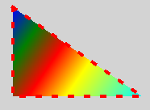

Shape QML Type
Renders a path. More...
| Import Statement: | import QtQuick.Shapes 1.7 |
| Inherits: | |
| Inherited By: |
Properties
- asynchronous : bool
- boundingRect : rect
(since 6.6) - containsMode : enumeration
(since QtQuick.Shapes 1.11) - data : list<Object>
- fillMode : enumeration
(since QtQuick.Shapes 6.7) - horizontalAlignment : enumeration
(since 6.7) - preferredRendererType : enumeration
(since 6.6) - rendererType : enumeration
- status : enumeration
- vendorExtensionsEnabled : bool
- verticalAlignment : enumeration
(since 6.7)
Detailed Description
Renders a path by triangulating geometry from a QPainterPath.
This approach is different from rendering shapes via QQuickPaintedItem or the 2D Canvas because the path never gets rasterized in software. Therefore Shape is suitable for creating shapes spreading over larger areas of the screen, avoiding the performance penalty for texture uploads or framebuffer blits. In addition, the declarative API allows manipulating, binding to, and even animating the path element properties like starting and ending position, the control points, and so on.
The types for specifying path elements are shared between PathView and Shape. However, not all Shape implementations support all path element types, while some may not make sense for PathView. Shape's currently supported subset is: PathMove, PathLine, PathQuad, PathCubic, PathArc, PathText and PathSvg.
See Path for a detailed overview of the supported path elements.
Shape { width: 200 height: 150 anchors.centerIn: parent ShapePath { strokeWidth: 4 strokeColor: "red" fillGradient: LinearGradient { x1: 20; y1: 20 x2: 180; y2: 130 GradientStop { position: 0; color: "blue" } GradientStop { position: 0.2; color: "green" } GradientStop { position: 0.4; color: "red" } GradientStop { position: 0.6; color: "yellow" } GradientStop { position: 1; color: "cyan" } } strokeStyle: ShapePath.DashLine dashPattern: [ 1, 4 ] startX: 20; startY: 20 PathLine { x: 180; y: 130 } PathLine { x: 20; y: 130 } PathLine { x: 20; y: 20 } } }

Like Item, Shape also allows any visual or non-visual objects to be declared as children. ShapePath objects are handled specially. This is useful since it allows adding visual items, like Rectangle or Image, and non-visual objects, like Timer directly as children of Shape.
The following list summarizes the available Shape rendering approaches:
- When Qt Quick is running with the default, hardware-accelerated backend (RHI), the generic shape renderer will be used. This converts the shapes into triangles which are passed to the renderer.
- The
softwarebackend is fully supported. The path is rendered via QPainter::strokePath() and QPainter::fillPath() in this case. - The OpenVG backend is not currently supported.
When using Shape, it is important to be aware of potential performance implications:
- When the application is running with the generic, triangulation-based Shape implementation, the geometry generation happens entirely on the CPU. This is potentially expensive. Changing the set of path elements, changing the properties of these elements, or changing certain properties of the Shape itself all lead to retriangulation of the affected paths on every change. Therefore, applying animation to such properties can affect performance on less powerful systems.
- However, the data-driven, declarative nature of the Shape API often means better cacheability for the underlying CPU and GPU resources. A property change in one ShapePath will only lead to reprocessing the affected ShapePath, leaving other parts of the Shape unchanged. Therefore, a frequently changing property can still result in a lower overall system load than with imperative painting approaches (for example, QPainter).
- At the same time, attention must be paid to the number of Shape elements in the scene. The way such a Shape item is represented in the scene graph is different from an ordinary geometry-based item, and incurs a certain cost when it comes to OpenGL state changes.
- As a general rule, scenes should avoid using separate Shape items when it is not absolutely necessary. Prefer using one Shape item with multiple ShapePath elements over multiple Shape items.
See also Qt Quick Examples - Shapes, Weather Forecast Example, Path, PathMove, PathLine, PathQuad, PathCubic, PathArc, and PathSvg.
Property Documentation
horizontalAlignment : enumeration |
verticalAlignment : enumeration |
Sets the horizontal and vertical alignment of the shape within the item. By default, the shape is aligned with (0,0) on the top left corner.
The valid values for horizontalAlignment are Shape.AlignLeft, Shape.AlignRight and Shape.AlignHCenter. The valid values for verticalAlignment are Shape.AlignTop, Shape.AlignBottom and Shape.AlignVCenter.
This QML property was introduced in Qt 6.7.
asynchronous : bool |
When rendererType is Shape.GeometryRenderer or Shape.CurveRenderer, a certain amount of preprocessing of the input path is performed on the CPU during the polishing phase of the Shape. This is potentially expensive. To offload this work to separate worker threads, set this property to true.
When enabled, making a Shape visible will not wait for the content to become available. Instead, the GUI/main thread is not blocked and the results of the path rendering are shown only when all the asynchronous work has been finished.
The default value is false.
boundingRect : rect |
Contains the united bounding rect of all sub paths in the shape.
This property was introduced in Qt 6.6.
containsMode : enumeration |
This property determines the definition of contains() for the Shape. It is useful in case you add Qt Quick Input Handlers and you want to react only when the mouse or touchpoint is fully inside the Shape.
| Constant | Description |
|---|---|
Shape.BoundingRectContains | The default implementation of QQuickItem::contains() checks only whether the given point is inside the rectangular bounding box. This is the most efficient implementation, which is why it's the default. |
Shape.FillContains | Check whether the interior (the part that would be filled if you are rendering it with fill) of any ShapePath that makes up this Shape contains the given point. The more complex and numerous ShapePaths you add, the less efficient this is to check, which can potentially slow down event delivery in your application. So it should be used with care. |
One way to speed up the FillContains check is to generate an approximate outline with as few points as possible, place that in a transparent Shape on top, and add your Pointer Handlers to that, so that the containment check is cheaper during event delivery.
This property was introduced in QtQuick.Shapes 1.11.
data : list<Object> |
This property holds the ShapePath objects that define the contents of the Shape. It can also contain any other type of objects, since Shape, like Item, allows adding any visual or non-visual objects as children.
fillMode : enumeration |
Set this property to define what happens when the path has a different size than the item.
| Constant | Description |
|---|---|
Shape.NoResize | the shape is rendered at its native size, independent of the size of the item. This is the default |
Shape.Stretch | the shape is scaled to fit the item, changing the aspect ratio if necessary. Note that non-uniform scaling may cause reduced quality of anti-aliasing when using the curve renderer |
Shape.PreserveAspectFit | the shape is scaled uniformly to fit inside the item |
Shape.PreserveAspectCrop | the shape is scaled uniformly to fill the item fully, extending outside the item if necessary. Note that this only actually crops the content if clip is true |
This property was introduced in QtQuick.Shapes 6.7.
preferredRendererType : enumeration |
Requests a specific backend to use for rendering the shape. The possible values are the same as for rendererType. The default is Shape.UnknownRenderer, indicating no particular preference.
If the requested renderer type is not supported for the current Qt Quick backend, the default renderer for that backend will be used instead. This will be reflected in the rendererType when the backend is initialized.
Shape.SoftwareRenderer can currently not be selected without running the scenegraph with the software backend, in which case it will be selected regardless of the preferredRendererType.
See rendererType for more information on the implications.
This property was introduced in Qt 6.6.
rendererType : enumeration |
This property determines which path rendering backend is active.
| Constant | Description |
|---|---|
Shape.UnknownRenderer | The renderer is unknown. |
Shape.GeometryRenderer | The generic, driver independent solution for GPU rendering. Uses the same CPU-based triangulation approach as QPainter's OpenGL 2 paint engine. This is the default when the RHI-based Qt Quick scenegraph backend is in use. |
Shape.SoftwareRenderer | Pure QPainter drawing using the raster paint engine. This is the default, and only, option when the Qt Quick scenegraph is running with the software backend. |
Shape.CurveRenderer | GPU-based renderer that aims to preserve curvature at any scale. In contrast to Shape.GeometryRenderer, curves are not approximated by short straight lines. Instead, curves are rendered using a specialized fragment shader. This improves visual quality and avoids re-tesselation performance hit when zooming. Also, Shape.CurveRenderer provides native, high-quality anti-aliasing, without the performance cost of multi- or supersampling. |
By default, Shape.GeometryRenderer will be selected unless the Qt Quick scenegraph is running with the software backend. In that case, Shape.SoftwareRenderer will be used. Shape.CurveRenderer may be requested using the preferredRendererType property.
Note: The Shape.CurveRenderer will approximate cubic curves with quadratic ones and may therefore diverge slightly from the mathematically correct visualization of the shape. In addition, if the shape is being rendered into a Qt Quick 3D scene and the OpenGL backend for RHI is active, the GL_OES_standard_derivatives extension to OpenGL is required (this is available by default on OpenGL ES 3 and later, but optional in OpenGL ES 2.)
status : enumeration |
This property determines the status of the Shape and is relevant when Shape.asynchronous is set to true.
| Constant | Description |
|---|---|
Shape.Null | Not yet initialized. |
Shape.Ready | The Shape has finished processing. |
Shape.Processing | The path is being processed. |
vendorExtensionsEnabled : bool |
This property controls the usage of non-standard OpenGL extensions.
The default value is false.
As of Qt 6.0 there are no vendor-specific rendering paths implemented.